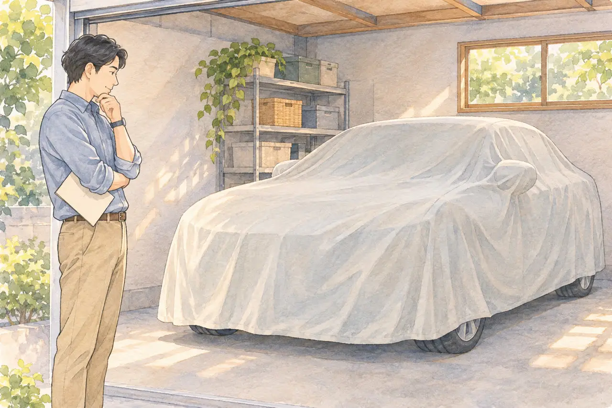
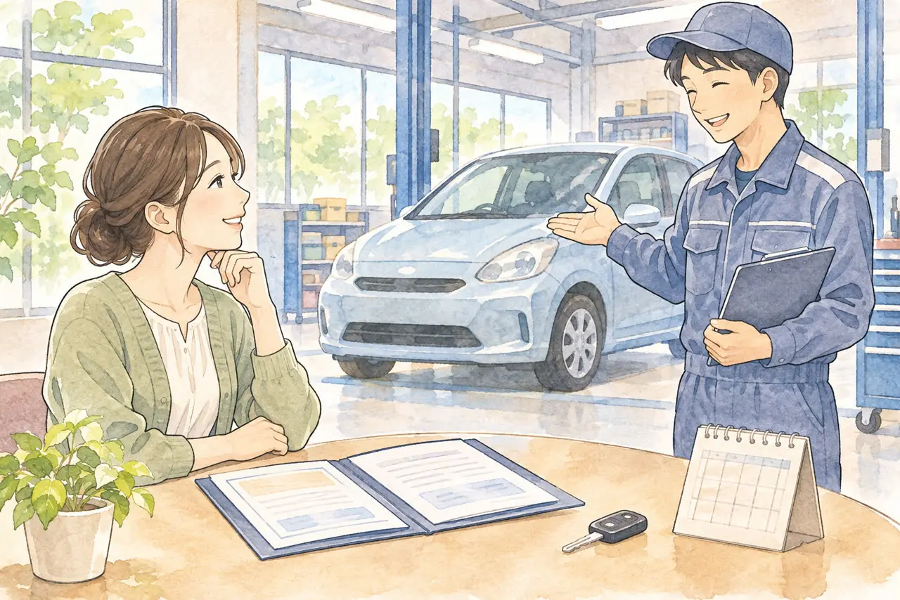

一時抹消した車を、また乗りたい方へ
一時抹消した車は、また乗れる？
再登録（中古新規登録）の流れと、必要書類・費用
公開
こんにちは、東京都足立区江北で自動車解体・廃車買取をしている「大崎商店 環七店」です。
この記事の要点
- 一時抹消した車は、手続きをすれば、また乗れます。
- 車検（保安基準に適合していることの確認）と、窓口での登録が必要です。
- 一時抹消のときに受け取った書類が、再登録に必要です。
「一時抹消した車を、また乗りたくなった」
「一時抹消のとき、もらった書類が見つからない」
「ナンバーを返したけれど、もう一度乗るにはどうすればいい？」
一時抹消した車は、手続きをすれば、また乗れます。 車が保安基準に適合していることを確認し、普通車は中古新規登録、軽自動車は中古車の新規検査の手続きをします。交付されたナンバーを取り付ければ、公道を走れるようになります。
この記事では、一時抹消した車を再び使うための手続き（再登録）の流れ、必要書類、費用の考え方、書類をなくしたとき、再び乗らないと決めたときの選択を、公的な案内をもとにご紹介します。一時抹消と永久抹消の違い全般は、「「一時抹消」と「永久抹消」の違いをやさしく解説」の記事をご覧ください。後半では、足立区の大崎商店の場合もご案内します。
① 一時抹消した車は、手続きをすればまた乗れます

| 手続き | 再び乗れる？ |
|---|---|
| 一時抹消登録（軽自動車は一時使用中止） | 乗れます。 検査・登録に必要な手続きを済ませ、交付されたナンバーを付ければ走れます |
| 解体による永久抹消登録（軽自動車は解体返納） | 乗れません。 車が解体されているため、元に戻せません |
一時抹消は、車の登録を一時的にやめる手続きです。その間は日常の移動に車を使えません。再び乗るときの手続きを、普通車では中古新規登録（新規登録の一種）、軽自動車では新規検査（中古車）と呼びます。
一時抹消のときに受け取った書類が、再登録に必要です。 まず、その書類が手元にあるかを確認しましょう。
② 普通車の再登録：全体の流れ
おおまかな流れは、次のとおりです。
- 書類を準備する。一時抹消のときの書類、印鑑証明書、自賠責保険、対象地域では車庫証明などを用意します。
- 車が保安基準に適合していることを確認する。検査場で新規検査を受けるか、有効な予備検査証や保安基準適合証などを用意します。
- 運輸支局などの窓口で中古新規登録を申請する。申請書類を提出し、手数料や重量税を納めます。自動車税の申告についても、窓口で確認します。
- 交付されたナンバープレートを取り付け、後ろのプレートに封印を受ける。封印には車両の確認が必要です。関東運輸局・封印の案内
足立区を使用の本拠とする普通車の登録窓口は、南花畑の足立自動車検査登録事務所です。関東運輸局・足立自動車検査登録事務所
車検に持ち込むなら、仮ナンバーか積載車
一時抹消では、原則として前後のナンバープレートを返納します。紛失や盗難で返納できないときは、警察に届け出て、運輸支局に理由書などの必要書類を確認してください。以前のナンバーが手元にあっても、一時抹消中にそのナンバーで公道を走ることはできません。新潟運輸支局・一時抹消登録
一時抹消中の車を運転して車検場へ行くには、仮ナンバー（自動車臨時運行許可）が必要です。申請には有効な自賠責保険が必要で、運転できるのは許可された目的・経路・期間に限られます。積載車に載せて運ぶ方法もあります。足立区・自動車臨時運行許可（仮ナンバー）
車検切れやナンバーがない車の運び方は、「車検切れの車は公道を走れない。どうやって廃車にする？」の記事もご覧ください。
③ 普通車の必要書類
国土交通省と運輸支局の案内では、中古車の新規登録に必要な主な書類は、次のとおりです（一時抹消後の再登録で必要になる主なものを、まとめています）。
| 書類 | ポイント |
|---|---|
| 登録識別情報等通知書（旧様式は一時抹消登録証明書） | 一時抹消のときに受け取る書類。通常は原本を提出します |
| 新規登録申請書 | 運輸支局の窓口で用意されています。本人が申請するときは、実印を押します |
| 手数料納付書 | 手数料の印紙を貼ります |
| 自動車重量税納付書 | 重量税の印紙を貼ります。税額は車両重量などで異なります |
| 所有者の印鑑証明書 | 発行から3か月以内のものが必要です |
| 委任状 | 所有者が代理人に依頼する場合は、所有者の実印を押した委任状が必要です。所有者と使用者が異なり、使用者が窓口へ行かない場合は、使用者の委任状も用意します |
| 譲渡証明書 | 所有者が変わるときに必要です。譲渡する人が、実印を押します |
| 自動車保管場所証明書（車庫証明） | 適用地域で必要です。東京都では発行からおおむね1か月以内のものを用意します。車庫の所在地を管轄する警察署で手続きします |
| 保安基準適合を確認できる書面 | 合格印のある自動車検査票、有効な予備検査証、または乗用車の有効な保安基準適合証のいずれかです |
| 使用者の住所を証する書面 | 所有者と使用者が異なる場合に必要です。発行から3か月以内の住民票の写しなどを用意します |
このほか、交付される車検証の有効期間をすべてカバーする自賠責保険（共済）が必要です。以前の契約を使えるかは保険会社に確認してください。証明書の情報が電子的に提供されている場合は、紙の証明書の提示は不要です。関東運輸局・自動車検査業務等実施要領
書類の種類や有効期間は、車の種類・地域・申請のしかたによって変わります。 申請の前に、管轄の運輸支局の案内で確認してください。
④ 車検（保安基準適合の確認）が必要です

再登録には、車が保安基準に適合していることの確認が必要です。普通車では、新規検査に合格するか、有効な予備検査証などで確認します。運輸支局の案内では、次のいずれかの書面を用意します。
- 合格印のある自動車検査票（運輸支局などで検査を受けたとき）
- 有効な自動車予備検査証
- 乗用車の有効な保安基準適合証（指定の整備事業者などで確認を受けたとき）
長く乗っていなかった車は、タイヤ、バッテリー、ブレーキ、オイル、ライトなど、整備が必要になることがあります。検査に通すための整備費用が、思ったより、かかることがあります。先に、整備工場などで、状態を見てもらうのがおすすめです。
⑤ 軽自動車の場合（一時使用中止からの再使用）
軽自動車の再使用は、軽自動車検査協会で、「新規検査（中古車）」の手続きをします。協会の案内では、主な書類は、次のとおりです。
- 自動車検査証返納証明書（一時使用中止のときに交付された書類。事前に用意）
- 保安基準適合証（指定の整備事業者から交付を受けた場合。有効期間は検査の日から15日間）
- 点検整備記録簿（直近の定期点検整備の結果）
- 使用者であることを証する書面（譲渡証明書や軽自動車検査証返納確認書など）
- 使用者の住所を証する書面（以前と同じ住所でも必要。個人の場合は発行から3か月以内の住民票の写し〈マイナンバーなし〉か印鑑登録証明書）
- 自賠責保険（共済）の証明書（新しい車検証の有効期間をすべてカバーするもの。証明書の情報が電子的に提供されている場合は、紙の提示は不要）
- 新規検査申請書、申請審査書、自動車重量税納付書（窓口で印紙を購入）
- 使用者以外が手続きをするときは、申請依頼書
- 検査場に車を持ち込む場合は、軽自動車検査票
軽自動車の検査手数料は、返納証明書と保安基準適合証を提出する場合は1台2,000円、通常の持ち込み検査は1台2,800円です（2026年11月9日確認）。このほかに重量税、自賠責保険料、整備費用などがかかります。持ち込み検査には事前予約が必要です。
軽自動車税の申告は、検査の手続きにあわせて案内を確認してください。対象地域で必要な車庫の届出は、車検証が交付された後に管轄の警察署で行います。軽自動車検査協会・新規検査（中古車）
一時使用中止については、「軽自動車の一時使用中止と解体返納の違い」の記事もご覧ください。
⑥ かかるお金の考え方
再び乗るときは、次のようなお金がかかります。
- 登録や検査の手数料（普通車は登録手数料と検査手数料が別。すでに予備検査を済ませている場合は、登録時の検査手数料は不要）
- 自動車重量税（車検の期間分。車両重量などで異なります）
- 自賠責保険料（新しい車検の期間分）
- 整備・点検の費用（車の状態によって、大きく変わります）
- 車庫証明の費用（必要な地域）
- 自動車税・軽自動車税（手続きや負担額は税の窓口に確認）
- ナンバープレートの費用（仮ナンバーを申請する場合は、その手数料もかかります）
普通車の中古車新規登録手数料は、窓口申請で1,300円です（2026年4月改定）。検査手数料や重量税などは、登録手数料とは別の費用です。整備や手続きを依頼する場合は、費用の内訳を見積もりで確認してください。国土交通省・登録と検査の法定手数料
長く乗っていなかった車を、再登録して乗り続けるか、手放すかは、これらの費用と、車の状態、今後の維持費を比べて、考えるのがおすすめです。維持費の目安は、「車の維持費は月いくら？あまり乗らない車を手放す判断の目安」の記事をご覧ください。
⑦ 書類をなくしたときは
普通車で登録識別情報等通知書などをなくした場合は、申請先の運輸支局に相談してください。富山運輸支局は、登録事項等証明書を取得できる場合に使う「新規検査・登録申立書」を公開しています。再登録できるか、何を用意するかは、車の登録状況を伝えて確認してください。富山運輸支局・各種様式（18番）
軽自動車の自動車検査証返納証明書は再交付されません。紛失した状態で新規検査を申請したい場合は、申請先の軽自動車検査協会に事前に相談してください。軽自動車検査協会・返納証明書を紛失した場合
相談の際は、以前のナンバー、車台番号、車検証の控えや紛失した書類のコピーなど、手元にある車の情報を用意しておくとスムーズです。
⑧ 再び乗らないと決めたときは
再登録の費用や手間を考えて、やはり乗らないと決めることもあります。その場合の選択は、次のとおりです。
- 解体する。一時抹消した普通車や一時使用中止した軽自動車を解体した場合は、解体届出をします。自動車リサイクル法に沿って解体され、車検の残りが1か月以上ある場合は、解体届出と同時に申請すると自動車重量税の還付を受けられます。国税庁・自動車重量税の廃車還付制度／廃車にするとお金は戻ってくる？
- 売る・引き取ってもらう：車の状態によっては、買取価格がつくこともあります。
すでに一時抹消している車でも、引き取りや解体の相談は、できます。 依頼先に、「一時抹消ずみの車です」と伝えてください。
⑨ 大崎商店の場合
ここからは、足立区の大崎商店の場合をご紹介します。
大崎商店は、車の引き取り・買取・解体を行うお店です。ご自身で再び乗る車の、再登録の手続きだけの代行は、お受けしていません。 再登録は、ご自身で運輸支局（軽自動車は軽自動車検査協会）で手続きするか、車検・登録の手続きを行う整備工場や事業者へ、ご相談ください。
一方で、次のようなときは、ご相談をお受けしています。
- 再び乗らないと決めた：一時抹消ずみの車の引き取り、解体（解体届出）まで、ご相談ください。解体費用や、廃車手続きの代行費用は、別に請求しません。
- 乗り換えたい：中古車の販売もしています。在庫は、お電話でご確認ください。
足立区内は、引き取り無料です。引き取りの費用は、所在地と車の状態によって条件が異なるため、事前にご案内します。電話では、車の状態（一時抹消ずみか、ナンバー・書類があるか）、置いてある場所を、お伝えください。
ご自分の車の場合が気になったら、お気軽にご相談ください。車の状態と置き場所を伺い、ご案内します。
電話で相談する03-3854-4141よくある質問
Q. 一時抹消した車は、また乗れますか？
A. 乗れます。保安基準に適合することを確認し、普通車は中古新規登録、軽自動車は中古車の新規検査の手続きをします。一時抹消中に車検のため自分で運転する場合は、事前に仮ナンバーの許可を受けてください。
Q. 解体して永久抹消した車を、元に戻せますか？
A. 解体した車は、再び登録して乗ることはできません。
Q. 一時抹消のときの書類をなくしました。どうすればいいですか？
A. 普通車は申請先の運輸支局に、登録事項等証明書や申立書で手続きできるか相談してください。軽自動車の返納証明書は再交付されないため、申請先の軽自動車検査協会に新規検査の手続き方法を確認してください。
Q. 再登録のとき、車検は受け直しですか？
A. 保安基準に適合していることの確認が必要です。新規検査を受けるほか、車に応じて、有効な予備検査証や指定整備工場が交付した保安基準適合証を使える場合があります。
Q. 再登録のとき、ナンバーは前と同じですか？
A. 一時抹消のときにナンバーを返しているため、再登録のときに、あらためて交付されます。番号がどうなるかは、運輸支局（軽自動車は軽自動車検査協会）で確認してください。
Q. 再登録には、いくらかかりますか？
A. 普通車の窓口での中古車新規登録手数料は1,300円です。軽自動車の検査手数料は、返納証明書と保安基準適合証を提出する場合は2,000円、通常の持ち込み検査は2,800円です（2026年11月9日確認）。普通車の検査手数料や、重量税、自賠責保険料、整備費用なども含めて、総額を確認してください。
Q. 再登録するか、解体するか、迷っています。
A. 再登録の費用と、車の状態、今後の維持費を比べて、決めるのがおすすめです。迷ったときは、車の状態（ナンバー・書類の有無、動くか）を伝えて、依頼先に相談してください。
一時抹消した車のことも、大崎商店にご相談ください
一時抹消ずみの車を、再び乗るか、手放すかで迷ったときも、まずはお電話ください。車の状態、置いてある場所、書類の有無をお知らせいただければ、ご案内します。
大崎商店では、
- 解体費用・手続き代行費用・印紙代は、別請求しません
- 足立区内は、引き取り無料
- 足立区外で買取価格がつかない車は、環七店から車で片道約30分圏内は引き取り無料
- 買取価格がつく車は、圏外でも、所在地と車の状態によっては無料で引き取り（事前にご案内します）
- 車種や状態によっては、引き取り当日その場で現金買取も可能
- 車のお持ち込みは、どこからでも歓迎（通常のお持ち込みは環七店が基本です。一時抹消済みの車を積載車などで持ち込む場合は、入谷店への搬入日時を事前にお電話でご相談ください）
ご来店の前に、お電話ください。引き取りなどで外出していることもあり、お電話いただければ、受け入れの可否や、ご案内できる日時をお伝えできます。
大崎商店 環七店
電話：03-3854-4141
〒123-0872
東京都足立区江北7丁目1−3
営業時間：月〜土 10:00〜18:00
休業日：日曜・祝日
環七沿い／舎人ライナー
西新井大師西駅
大崎商店 入谷店
電話：03-3899-2837
〒121-0836
東京都足立区入谷7丁目5−11
営業時間：月〜土 9:30〜17:30
休業日：日曜・祝日・第2土曜
引き取りやご相談のお電話は、環七店がスムーズです。お電話の際は、「一時抹消ずみの車のことで」とお伝えください。車検証や、一時抹消のときの書類をお手元にご用意いただくと、ご案内がスムーズです。
書類の様式や詳しい手続きは、以下の公式案内をご確認ください（2026年11月9日確認）。
- 普通車の新規登録に必要な書類と申請書の様式。手数料は⑥の改定後の案内をご確認ください。新潟運輸支局・新規登録／国土交通省・OCR申請書の様式と記載例
- 東京都内で普通車の車庫証明を取る手続き。警視庁・自動車保管場所証明書（車庫証明）
※掲載のイラストはAIで作成したイメージです。実際の店舗・車両・相談風景を撮影したものではありません。